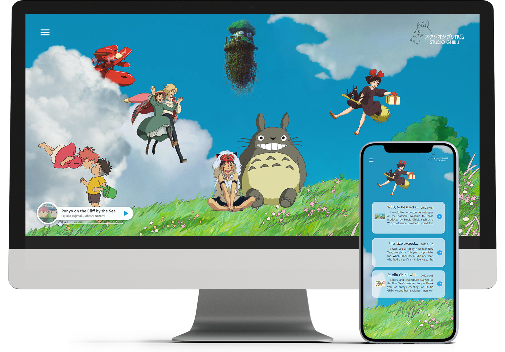
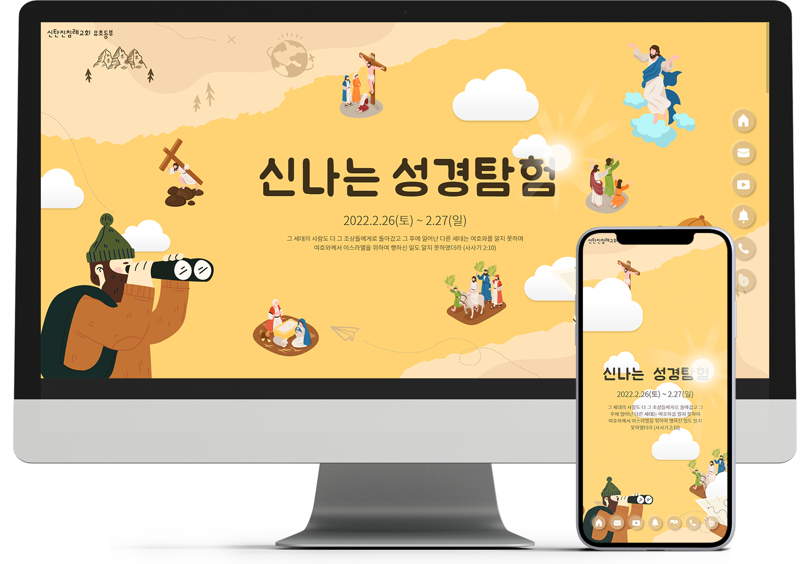
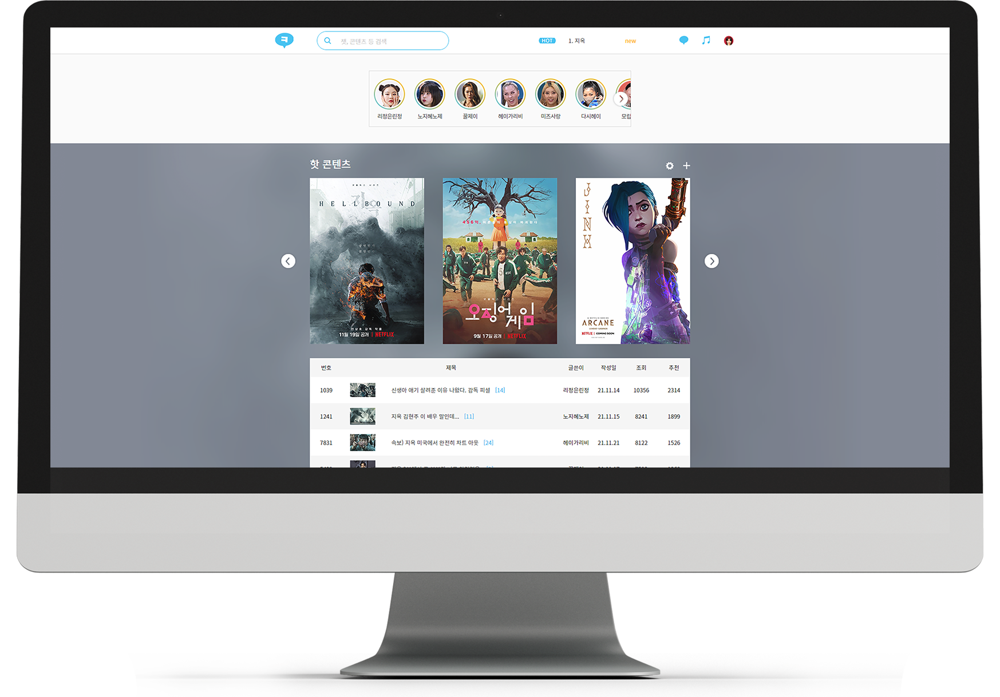

HONG
ABOUT
WORK
CONTACT
1
지브리 스튜디오
(Ghibli Studio)
소개
애니메이션 제작사
이용자
지브리 스튜디오의 작품을 본 사람들
설계의도
지브리만의 가치관과 분위기, 그리고 작품을 보며 느꼈던 감정을 2차적으로 느낄 수 있도록 연출함으로써 방문자에게 스튜디오의 작품과 스튜디오에서 진행하는 이벤트를 이용할 수 있도록 접점을 마련하였습니다.
미디어쿼리
반응형 웹, 모바일 최적화 완료
사이트 보기
기획의도
깃허브

2
신나는 성경탐험
(Bible-Exploration)
소개
초등부 성경학교 홍보 및 안내
이용자
초등학생 및 초등학생의 아이를 둔 학부모
설계의도
주 이용자인 초등학생이 pc보다 모바일을 더 사용한다는 점과 해당 사이트의 링크를 이용자에게 공유할 때 카카오톡을 사용하는 것을 고려하여 모바일에 최적화된 레이아웃을 조성하였습니다.
주 이용자의 연령층에 맞게 재밌는 애니메이션과 인터랙션을 추가하였습니다.
미디어쿼리
반응형 웹, 모바일 최적화 완료
사이트 보기
기획의도
깃허브

3
비콘챗
(Viconchat)
소개
OTT 플랫폼 커뮤니티
이용자
OTT 플랫폼의 콘텐츠에 대하여 소통하고 싶은 사람들
설계의도
유튜브를 영상과 동시에 댓글을 보면서 이용하는 사람의 수가 적지 않듯이 이용목적이 비슷한 OTT 플랫폼 커뮤니티 또한 다르지 않을 것이라고 판단하였습니다. 따라서, 콘텐츠 영상과 커뮤니티 사이트를 모니터 한 화면에서 동시에 보기 편하도록 다소 작은 812px의 그리드를 기준으로 디자인하였습니다.
미디어쿼리
반응형 웹 불필요
사이트 보기
기획의도
깃허브
